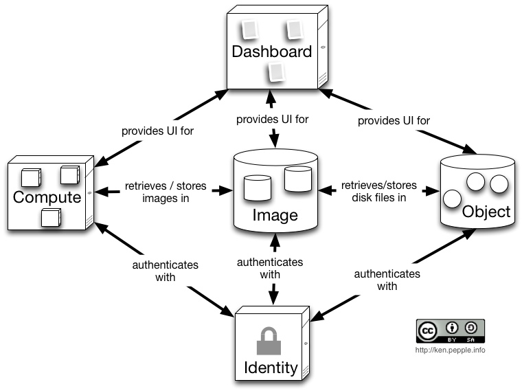

OpenStack - Theory and Practice

Sean M. Collins
@sc68cal

tl;dr
- Written in Python
- Provides API compatability with Amazon AWS
- Install on your own hardware - build your own private cloud
Original Project - Nova
- Wired: The Secret History of OpenStack, the Free Cloud Software That’s Changing Everything
- Nova used to do everything
- Identity
- Object Storage
- Networking
- Block Storage
- Nova would be split - became the compute service
- Parts of Nova that handled everything besides compute became separate projects
Components - Essex Era
- Identity Service (Keystone)
- File Service (Swift)
- Image Service (Glance)
- Compute Service (Nova)
- Dashboard (Horizon)
OpenStack Architecture
- Provide a common interface
- Plugin/Drivers provides the concrete implementations
Compute Example: "Create a VM "
Plugins for each hypervisor handle how to accomplish this request
OpenStack - Essex
OpenStack - Folsom

Notes about Folsom Architecture
- Introduction of two new services:
- Block Storage API (Cinder)
- Network API (Quantum)
- These services were extracted from the Nova codebase
Networking
Nova-Network
- Provided three network configuration types
- Only two are worth talking about
- FlatDHCPManager
- VLANManager
Instance Networking
- Fixed IPs
- RFC 1918 Address
- Similar to the private IPs given to EC2 instances for cloud-only communication
- Floating IPs
- IP addresses used to connect instances to the outside world
- Similar to Elastic IPs from AWS
Security Groups
- Similar to the Amazon EC2 Security Group API
- Security group - consists of rules
- Each rule has a type, Source CIDR, and port range
Nova-Network FlatDHCPManager

Nova-Network multi host configuration
Nova-Network VLANManager

* Image credit - Mirantis
Openstack Quantum
- Networking as a service
Quantum Network
A network is an isolated virtual layer-2 broadcast domain that is typically reserved for the tenant who created it unless the network is configured to be shared. Tenants can create multiple networks until they reach the thresholds specified by per-tenant quotas.
In the Quantum API v2.0, the network is the main entity. Ports and subnets are always associated with a network.
Quantum Subnet
A subnet represents an IP address block that can be used to assign IP addresses to virtual instances. Each subnet must have a CIDR and must be associated with a network. IPs can be either selected from the whole subnet CIDR or from allocation pools that can be specified by the user.
A subnet can also optionally have a gateway, a list of dns name servers, and host routes. This information is pushed to instances whose interfaces are associated with the subnet
Quantum Port
A port represents a virtual switch port on a logical network switch. Virtual instances attach their interfaces into ports. The logical port also defines the MAC address and the IP address(es) to be assigned to the interfaces plugged into them. When IP addresses are associated to a port, this also implies the port is associated with a subnet, as the IP address was taken from the allocation pool for a specific subnet.
Quantum - Plugins
- Quantum provides a common API, for operations that are needed in a software defined networking environment
- Quantum uses plugins, which provide the concrete implementations of the APIs
Technologies used by plugins
- 802.1q (VLANs)
- 802.1Qbh
- Linux TUN/TAP devices
- GRE Tunnels
Quantum Plugins
- OpenVSwitch
- Cisco
- LinuxBridge
- Microsoft Hyper-V
- Nicira
- And many more!
Quantum - Flat Networking
- Similar to the nova-network FlatDHCP configuration

Quantum - Multiple Flat Networks

Quantum - Provider Router
Quantum - Tenant Routers

Demo
- DevStack
- Collection of scripts that set up a development environment for hacking on OpenStack
- Vagrant+Devstack
Client Libraries
- python-novaclient
- OpenStack API client for $LANGUAGE
- Horizon dashboard